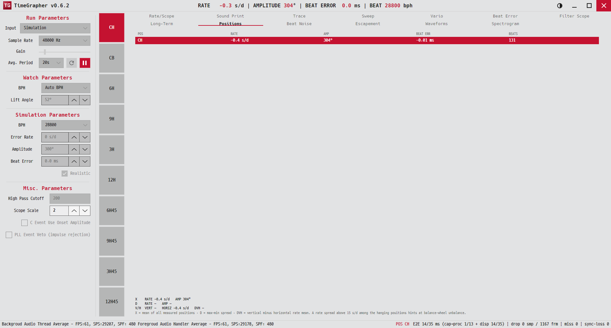

9. Positions
시계를 여러 자세로 두고 잰 결과를 한 표에 모아, 어느 자세가 나쁜지·전체 균형이 잡혀 있는지 봅니다.
Collects readings taken in several positions into one table, to see which position is worst and whether the watch is balanced.

용도 · Purpose
기계식 시계는 자세에 따라 정확도가 달라집니다(중력의 영향). 표준 검사는 6개 자세에서 재서 편차를 보는데, 이 탭이 그 결과를 모읍니다.
A mechanical watch keeps different time in different positions (gravity). Standard testing measures several positions and looks at the spread — this tab aggregates that.
무엇이 보이나 · What's shown
- 포지션 버튼(위) — 6개 자세(12·3·6·9·H·D). 현재 자세는 강조됩니다. 왼쪽의 포지션 스트립과 연동.Position buttons (top) — six positions (12·3·6·9·H·D); the active one is highlighted. Tied to the position strip.
- 측정표 — 열:
POS · RATE · AMP · BEAT ERR · BEATS. 자세별로 한 행, 활성 행 강조.Table — columnsPOS · RATE · AMP · BEAT ERR · BEATS; one row per position, active row highlighted. - 요약 —
X(평균),D(편차 = 최대−최소),V/H(수직 자세 vs 수평 자세 평균과 그 차이 DVH).Summary —X(mean),D(spread = max−min),V/H(vertical vs horizontal averages and their delta DVH).
불균형 경고 — 매달린(수직) 자세들 사이 레이트 편차가 25 s/d를 넘으면 "Possible balance-wheel unbalance: rate varies X s/d across the hanging positions"가 표시됩니다(밸런스 휠 불균형 의심).
Unbalance alert — if rate varies more than 25 s/d across the hanging (vertical) positions, it shows "Possible balance-wheel unbalance…" (suspected balance-wheel imbalance).
읽는 법 · How to read
- 한 자세만 유독 빠르거나 느리면(예: 6시 아래가 크게 느림) 등시성(isochronism) 문제일 수 있습니다.If one position is markedly fast/slow (e.g. 6-down much slower), it can indicate an isochronism problem.
- D(편차)가 작을수록 자세에 둔감한 좋은 시계입니다.A smaller D (spread) means a watch less sensitive to position — better.
- 측정 방법: 포지션 버튼으로 자세를 고르고, 시계를 그 자세로 둔 뒤 안정될 때까지 재고, 다음 자세로 넘어갑니다.Workflow: pick a position button, place the watch that way, let it settle, then move to the next position.
전체 건강도를 한눈에 보는 레이더 차트(보너스 기능)도 이 자세별 데이터를 활용합니다.
A radar chart (bonus feature) for overall health also draws on this per-position data.